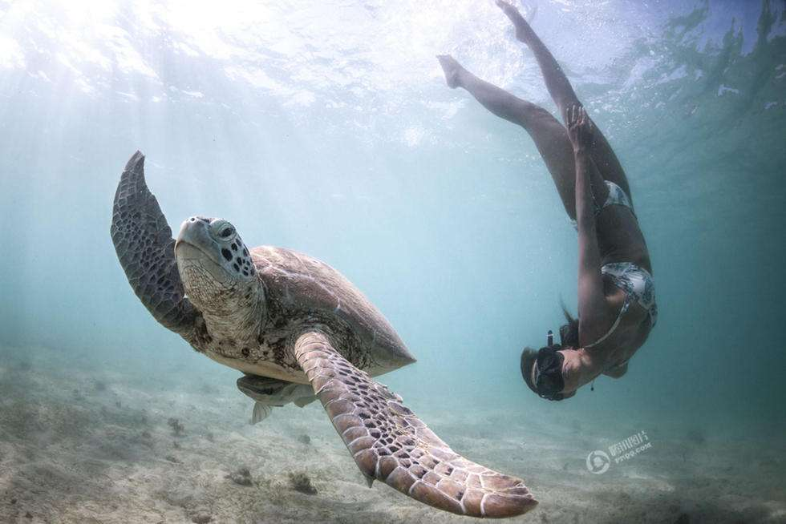
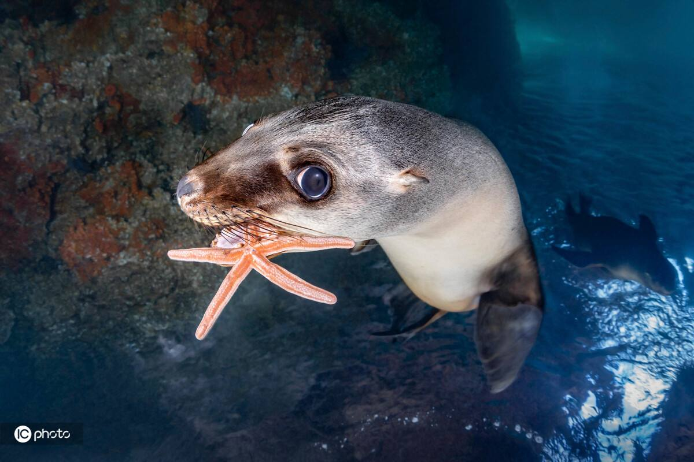
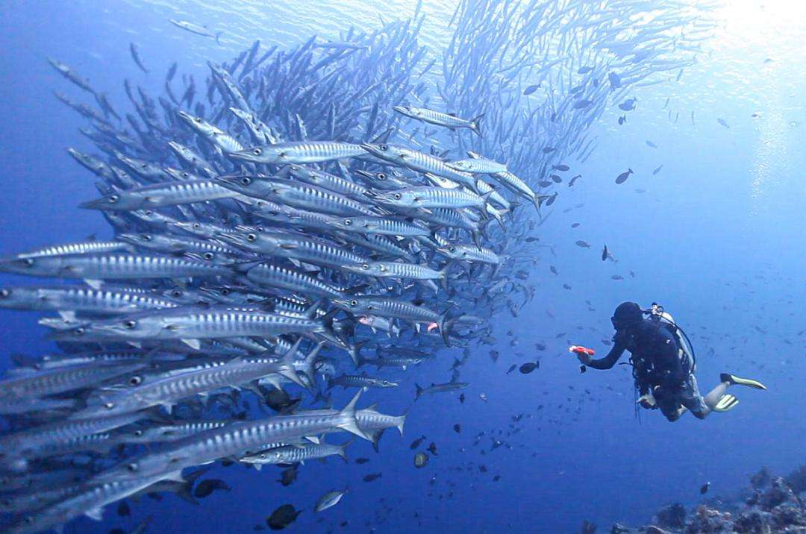
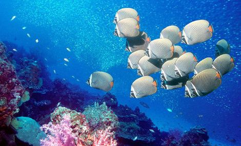

泡泡潜水俱乐部为您量身打造一流的潜水服务。让您开心而来，满意而归……
下面是俱乐部会员在水下用数码相机拍摄的一些精彩瞬间。
如果你想为图片库提供珍贵图片，请与

这只海龟在大堡礁（澳大利亚昆士兰州）周围优雅地游泳，尽管它身上右侧已经有一大块旧伤，大概是在遭到鲨鱼攻击时留下的。[摄影：爱•兰德]

吉尔在浮潜时拍摄了这张图片。当时海蜇距海平面仅有两英尺，因此光线条件良好。我们能清楚地看到海蜇与一群小鱼相伴游泳。[摄影：吉尔•史密斯]

“当海龟吃珊瑚时，我正好在它的旁边--这太美妙了。”拍摄这张图片的俱乐部成员鲍勃这样为我们描述。[摄影：鲍勃•斯登]
你就是一颗星星--不要让任何人说出你有什么不同！[摄影：海伦•克兰菲尔]

马克拍摄的另一张珊瑚礁图片。[摄影：马克•威廉姆斯]
Copyright©2008 BubbleUnder.com.All Rights Reserved. 版权所有 泡泡潜水俱乐部
地址：海南省三亚市碧海蓝大酒店海日阁8A22号
咨询电话：0898-88233755 88233752 13976113755